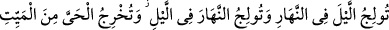
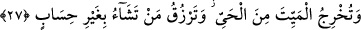
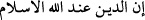

27. Geceyi gündüze katar; gündüzü de geceye katarsın. Ölüden diriyi çıkarır;
diriden de ölüyü çıkarırsın. Dilediğine de sayısız rızık verirsin.
Sen geceyi kısaltarak, gündüzü de uzatarak, “geceyi gündüzün içine katarsın.”
Neticede gündüz on beş saat, gece dokuz saat olur.
“Gündüzü de gecenin içine katarsın.” Böyle olunca da gece on beş saat, gündüz
dokuz saat olur.
“Ölüden diriyi çıkarırsın.” Canlıyı bir nutfeden, kuşu bir yumurtadan; âlim bir evlâdı
câhil bir babadan; ya da mü’min bir evlâdı kâfir bir babadan; veyahut da türlü nebâtâtı
kuru topraktan yaratır, meydana çıkarırsın.
Yukarıda sayılanların aksine olarak “diriden de ölüyü çıkarırsın.”
“Dilediğine de hesapsız rızık verirsin.”
Ebu’l-Abbas el-Mukrî şöyle diyor: “Hesap” kelimesi Kur’ân’da üç mânada
kullanılmıştır:
1- Bu âyetteki gibi “yorgunluk” mânasına: “Dilediğini hesapsız hiçbir yorgunluk
olmadan rızıklandırırsın.” (Âl-i İmrân, 3/27)
2- “Sayı” mânasına: “Sabredenlerin ecirleri hesapsız “sayısız” olarak
verilecektir.” (ez-Zümer, 39/10)
3- “Mutâlebe” yani karşılıklı istekte bulunma mânasına: “İstersen ver, yahud ondan
bir şey istemeden yanında tut.” (es-Sa’d, 38/39)
Bu âyette, akıllara hayret veren bu büyük işleri yapan Cenâb-ı Hakk’ın mülkü
Acem’den alıp onları zelîl kılmaya, Arab’a verip onları aziz kılmaya kudretinin elbette
yeteceğine ve bunun O’na her şeyden kolay olduğuna delâlet vardır.
Ali (r.a.)’den rivâyet olunduğuna göre Peygamberimiz (s.a.) şöyle buyurmuşlardır:
“Fâtiha sûresi, Âyetü’l-Kürsi ve Âl-i İmrân sûresinden iki âyet; yani dan,<
âyetinin sonuna kadar; bir de den, kısmına kadar olan âyetlerle Allah arasında hicâb yoktur.
Bu âyetler, Cenâb-ı Hakk’a demişlerdir ki: “Ya Rabbi, bizi yere mi, sana âsî
olanların içine mi indiriyorsun?” Allah Teâlâ cevap olarak buyurmuştur ki:
“Yemin ettim, kim bu âyetleri her namazdan sonra okursa, ona cenneti yurt
yapacağım; kuds hazîresinde barındıracağım ve ona günde yetmiş defa nazar
edeceğim; yetmiş derdini gidereceğim ki en aşağısı mağfirettir. Bütün
düşmanlarından ve hasedcilerden koruyacağım ve onlara karşı ona yardım
edeceğim.”[22]